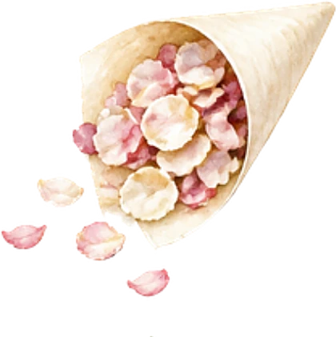
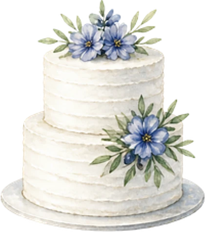
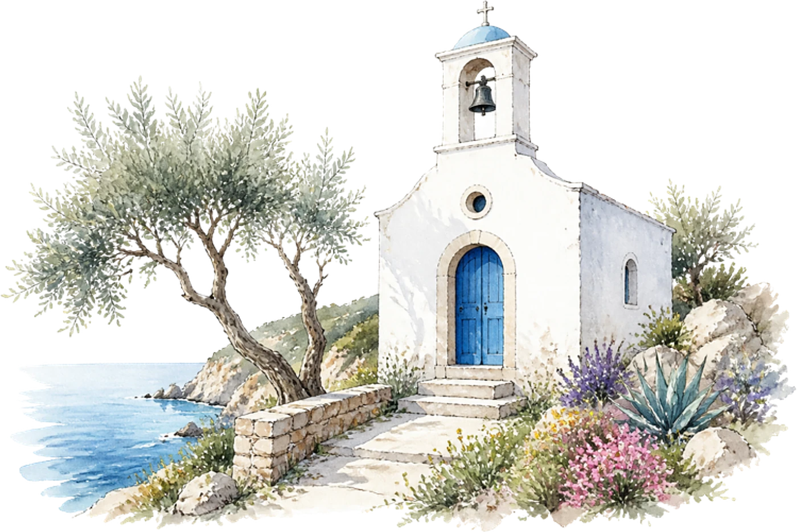
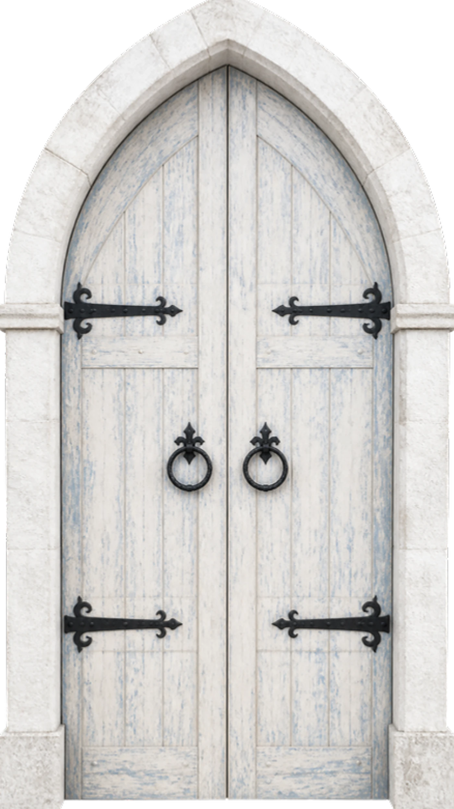
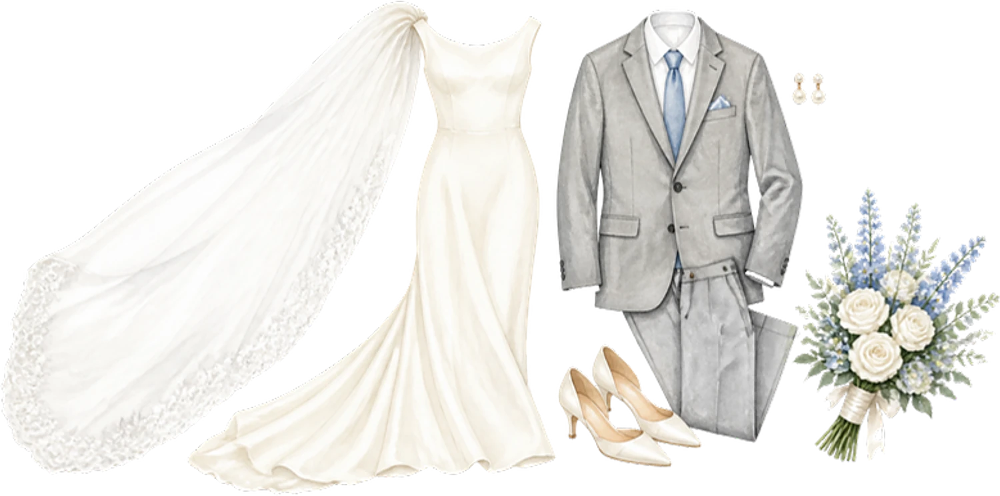

Le programme
Samedi 19 juin 2027
- 15 h 00Échange des alliances

15 h 45Sortie sous les pétales- 16 h 30Vin d’honneur face à la mer
- 19 h 00Dîner sur la terrasse
- 21 h 30Première danse

23 h 00Gâteau des mariés
Le lieu

Chapelle des Embruns
Bonifacio

Tenue
Élégance de bord de mer
Blanc, bleu et tons de sable. Prévoyez des chaussures confortables : la chapelle se rejoint à pied par un sentier.

Il reste
--jours
--heures
--minutes
Votre réponse
Merci de répondre avant le 1er mai 2027.
Je serai présent·eJe ne pourrai pas venir